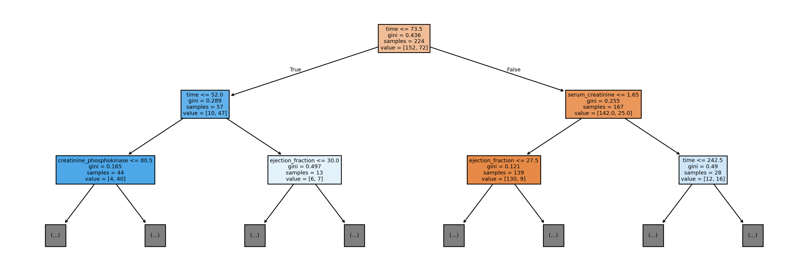
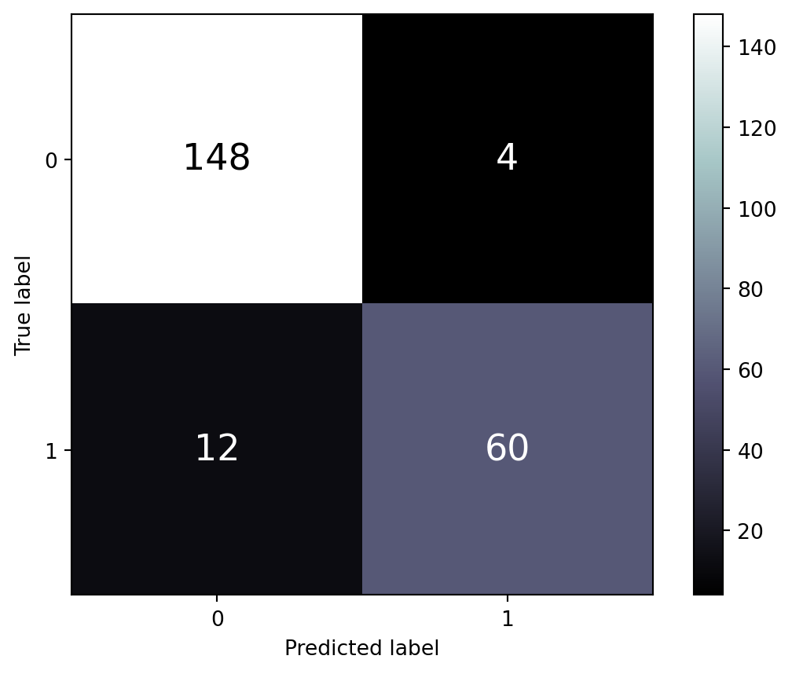
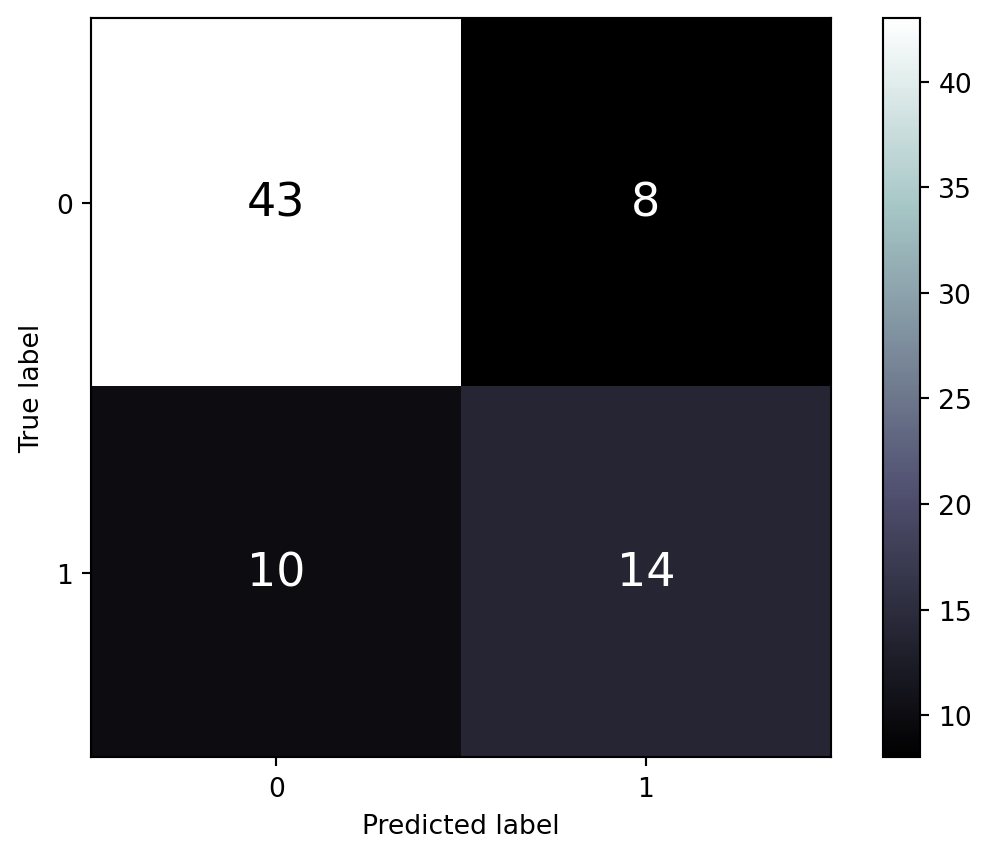
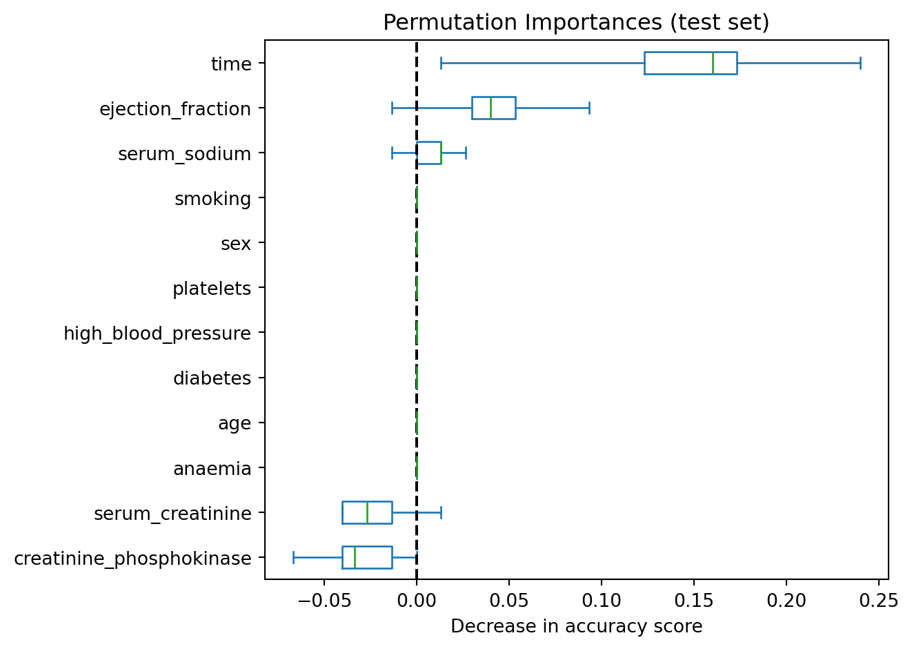
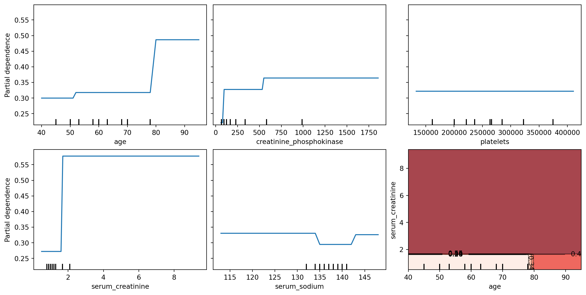
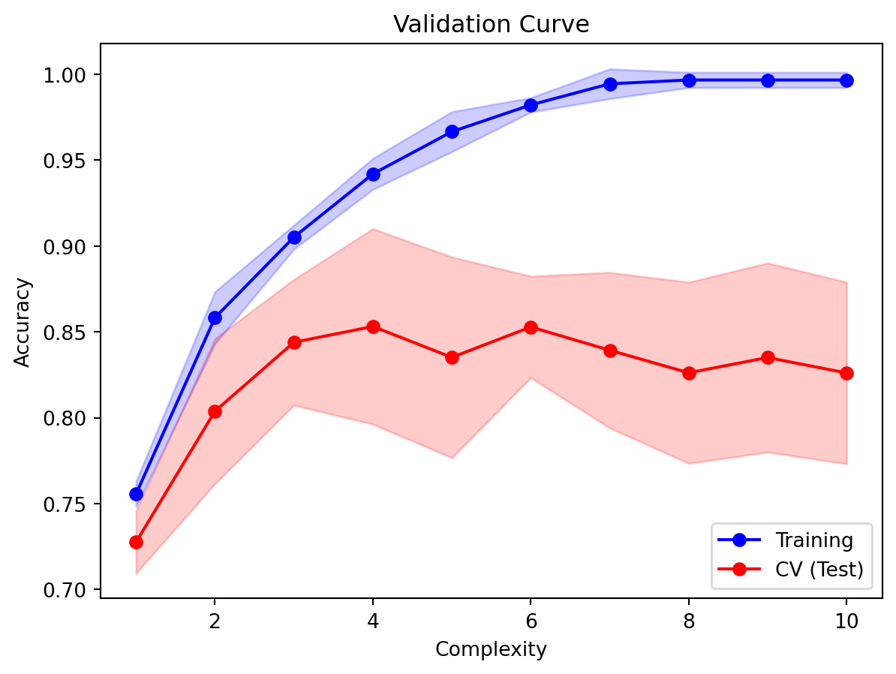
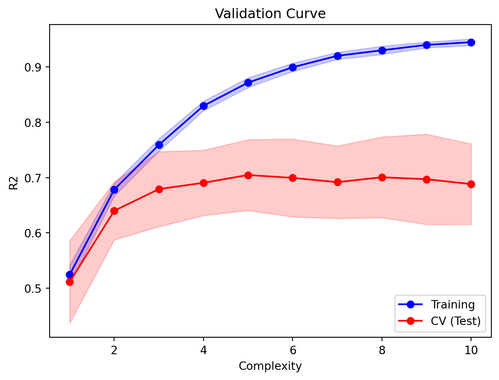
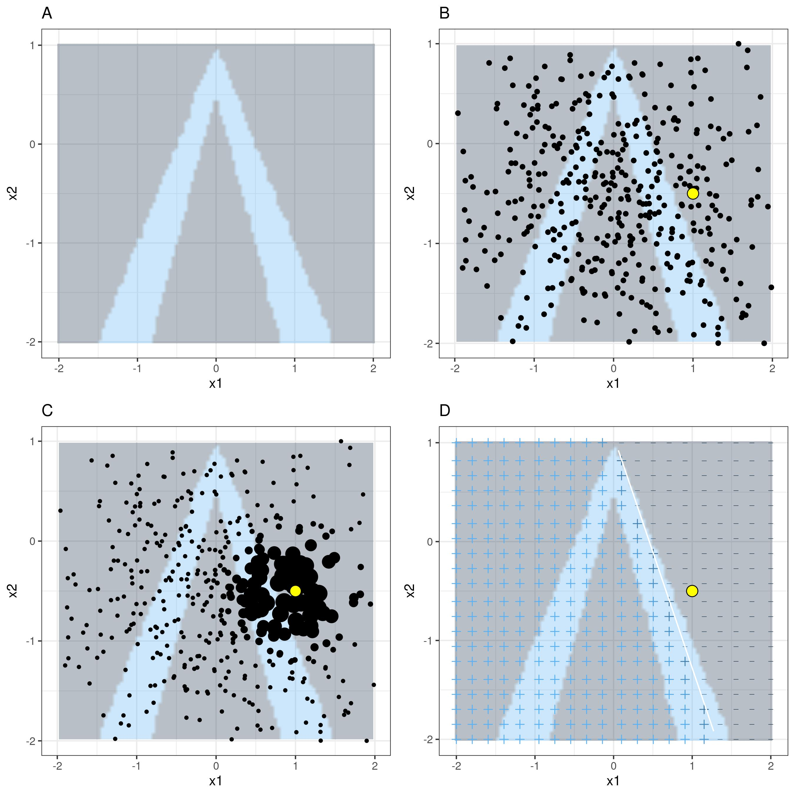
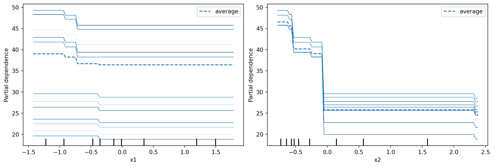

import pandas as pd
import numpy as np
import matplotlib.pyplot as plt
from itables import show
from lime import lime_tabular
from sklearn import tree
from sklearn.ensemble import RandomForestClassifier, RandomForestRegressor
from sklearn.metrics import (
accuracy_score, f1_score, confusion_matrix,
ConfusionMatrixDisplay, precision_score, recall_score, r2_score
)
from sklearn.model_selection import (
cross_val_score, cross_validate, ShuffleSplit,
learning_curve, validation_curve, GridSearchCV, train_test_split
)
from sklearn.inspection import permutation_importance
from sklearn.neighbors import KNeighborsRegressor
from sklearn.preprocessing import StandardScaler
from sklearn.inspection import PartialDependenceDisplay, partial_dependence8 Supervised Learning
8.1 Introduction
In supervised learning, our goal is to develop a model that can predict a quantity of interest from a set of features. In this process,
- Algorithms learn from a training set of labelled examples.
- This training set is meant to be representative of the set of all possible inputs.
- Example algorithms include logistic regression, support vector machines, decision trees and random forests. Regression models can also be used for supervised learning.
Here are some examples:
- We wish to predict if a student will graduate from university or not, based on his/her ‘A’ level results.
- We wish to predict tomorrow’s stock price based on today’s price.
8.2 Classification versus Regression
If the answer to the question (supervised learning problem) we are facing is either YES or NO, then what we have is a classification problem. Here are some examples:
- Given the results of a clinical test, does this patient suffer from diabetes?
- Given an MRI, is there a tumor?
On the other hand, if we are trying to predict a real-valued quantity, then we are faced with a regression problem.
- Given the details about an apartment, what will the rental be?
- Given historical transactions of a customer, how much is he likely to spend on his next purchase?
8.3 Supervised Learning Workflow

The overall workflow in supervised learning is as shown in Figure 8.1. Here are the specific details:
- Split up a dataset into training and test datasets, typically along a 80/20 or 75/25 split. Do not touch the test data again until the end.
- Preprocess/clean the training data and store the parameters for later use on the test data.
- Example preprocessings are scaling, one-hot encoding, PC decomposition, etc.
- Decide on what models you wish to try. Each model has parameters to be fit (from the data), and hyperparameters to be chosen by you.
- Example models are k-nearest neighbours (KNN) and random forests.
- A hyperparameter for KNN is the number of neighbours to use.
- A hyperparameter for random forests is the number of trees.
- Hyperparameters usually control the complexity of a model. If a model is too complex, it will over-fit to the training data but fare poorly on the test data.
- Example models are k-nearest neighbours (KNN) and random forests.
- Use cross-validation or a set-aside validation set to decide on the hyperparameters for your chosen estimator. To fit the parameters for a particular hyperparameter configuration, we typically minimise a loss function or error metric.
- Once you are satisfied with your choice(s) or model, evaluate the selected model on the test set to obtain an estimate of your generalisation error.
8.4 Scikit-learn
Scikit-learn is a library in Python which has several useful functions used in machine learning. The library has many algorithms for classification, regression, clustering and other machine learning methods. It uses other libraries like NumPy and matplotlib which are also used in this course. The website for scikit-learn is an excellent source of examples and tips on using the functions within this package (see the references).
All objects in scikit-learn have common access points. The three main interfaces are:
- Estimator interface -
fit()method.- This function allows us to build and fit models.
- Any object that can estimate some parameters based on a dataset is an estimator.
- Estimation is performed by the
fit()method. This method takes in two datasets as arguments (the input data, and the corresponding output/labels).
- Predictor interface -
predict()method.- This function allows us to make predictions.
- Estimators capable of making predictions when given a dataset are called predictors.
- A predictor has a
predict()method. It takes in a dataset of new instances and returns a dataset of corresponding predictions.
- Transformer interface -
transform()method.- This function is for converting data.
- Estimators which can also transform a dataset are called transformers.
- Transformations are carried out by the
transform()method. - This method takes in the dataset to transform as a parameter and returns the transformed dataset.
- We will not have too much time to spend on the transformer interface in this course.
Input Data Structure
For supervised learning problems in scikit-learn, the input data has to be structured in NumPy-like arrays.
The feature matrix X, of shape \(n\) by \(d\) contains features: * \(n\) rows: the number of samples * \(d\) columns: the number of features or distinct traits used to describe each item in a quantitative manner
Each row in the feature matrix is referred to as a sample, example or an instance.
\[ \text{feature matrix:} \quad \mathbf{X}_{n\times d} = \begin{bmatrix} x_{1,1} & x_{1,2} & \ldots & x_{1,d}\\ \cdots & \cdots & \cdots & \cdots \\ x_{n,1} & x_{n,2} & \ldots & x_{n,d} \end{bmatrix} \]
A label vector y stores the target values. This vector stores the true output value for each corresponding sample (row) in matrix X.
\[ \text{label vector:} \quad \mathbf{y} = \begin{bmatrix} y_1 & y_2 & \ldots & y_n \end{bmatrix}^T \]
8.5 Measures of Performance
For Classification
Before we head into creating classifiers which will help us predict heart failure, let’s understand what determines the usefulness of a classifier. For now, we focus on the case where the outcome is binary (only two possible values for \(y_i\)).
Accuracy
A basic measure of performance would be the accuracy of predictions.
\[ \text{accuracy} = \frac{\text{Number of correct predictions}}{\text{Total number of predictions}} \]
When more detailed analysis is needed, partial performance metrics can be presented in a confusion matrix. A confusion matrix is a contingency table that arises from cross-classification of predictions and the actual outcomes.
| Positive prediction | Negative prediction | |
| Positive truth | TP | FN |
| Negative truth | FP | TN |
In the confusion matrix, there are 4 possible cases:
- True positives (TP)
- Classifier predicts sample as positive and it really is so.
- False positives (FP)
- Classifier predicts sample as positive but in truth, it is negative. Incorrect prediction
- True negatives (TN)
- Classifier predicts sample as negative and it really is so.
- False negatives (FN)
- Classifier predicts sample as negative but in truth, it is positive. Incorrect prediction
Precision and Recall
With the confusion matrix, more performance metrics can be defined besides the accuracy of a classifier.
The recall of a classifier is the proportion of TP correctly identified:
\[ \text{recall}= \frac{\text{TP}}{\text{TP + FN}} \]
The precision of a classifier is the proportion of predicted positives that are truly positive:
\[ \text{precision} = \frac{\text{TP}}{\text{TP + FP}} \]
Depending on the context of the problem, it may be more important to have better recall than precision. In the above, we have defined recall and precision for the positive category outcome. There are analogous definitions for the negative outcome.
Note that recall is also sometimes referred to as the True Positive Rate (TPR), while \((1 - \text{precision})\) is also referred to as the False Positive Rate (FPR).
F1 score
The harmonic mean of two numbers \(x_1\) and \(x_2\) is \[ \left( \frac{1/x_1 + 1/x_2}{2} \right)^{-1} \]
We can combine precision and recall into one score using their harmonic mean: \[ F1 = 2 \times \frac{\text{precision} \times \text{recall}}{\text{precision} + \text{recall}} \]
Roughly, the F1 score is a summary of how good the classifier is in terms of both precision and recall. The F1 score is preferable to the simple arithmetic mean of precision and recall, because it ensures that both are high; the F1 score will be significantly lower than the mean if one of precision or recall is very low.
For Regression
Root Mean Squared Error
For regression problems, the typical measure of accuracy is RMSE. Let * \(y_i\) be the observed quantity (that we wish to predict), for \(i=1,\ldots, n\), and * \(\hat{y}_i\) be the predicted quantity for observation \(i\).
The RMSE is defined to be:
\[ RMSE = \sqrt{\frac{1}{n} \sum_{i=1}^n (y_i - \hat{y}_i)^2} \]
Mean Absolute Error
Using the RMSE amplifies the effect of outliers because of the square-term in the equation. Hence, in order to be resistant to outliers, one alternative is to the mean absolute error.
\[ MAE = \frac{1}{n} \sum_{i=1}^n |y_i - \hat{y}_i| \]
8.6 Classification
In this section, we demonstrate how we can use scikit-learn to perform supervised learning on a classification problem.
Example 8.1 (Heart failure)
This dataset, from the UCI machine learning repository contains records on 299 patients who had heart failure. The data was collected during the follow-up period; each patient had 13 clinical features recorded. The primary variable of interest (\(y\)) was whether they died or not. Here are more details about each column:
age: age of the patient (years)anaemia: decrease of red blood cells or hemoglobin (boolean)creatinine phosphokinase(CPK): level of the CPK enzyme in the blood (mcg/L)diabetes: if the patient has diabetes (boolean)ejection_fraction: percentage of blood leaving the heart at each contraction (percentage)high_blood_pressure: if the patient has hypertension (boolean)platelets: platelets in the blood (kiloplatelets/mL)sex: woman or man (binary)serum_creatinine: level of serum creatinine in the blood (mg/dL)serum_sodium: level of serum sodium in the blood (mEq/L)smoking: if the patient smokes or not (boolean)time: follow-up period (days)DEATH_EVENT: if the patient died during the follow-up period (boolean). This is the categorical outcome that we wish to predict.
age anaemia creatinine_phosphokinase diabetes ejection_fraction \
0 75.0 0 582 0 20
1 55.0 0 7861 0 38
2 65.0 0 146 0 20
3 50.0 1 111 0 20
4 65.0 1 160 1 20
high_blood_pressure platelets serum_creatinine serum_sodium sex \
0 1 265000.00 1.9 130 1
1 0 263358.03 1.1 136 1
2 0 162000.00 1.3 129 1
3 0 210000.00 1.9 137 1
4 0 327000.00 2.7 116 0
smoking time DEATH_EVENT
0 0 4 1
1 0 6 1
2 1 7 1
3 0 7 1
4 0 8 1 Decision Tree
To begin our journey into supervised learning, we shall fit a decision tree to this dataset. A decision tree consists of a hierarchal set of rules, that when followed, will return a prediction for an individual observation. Each is a (typically binary) split of one of the features in the observation. One of the main advantages of decision tree classifiers is that they are easy to interpret. However, some disadvantages are that: They tend to overfit to a dataset, and they have high variability. This latter point means that a small change in the training data could lead to vastly different predictions. Although in this example we focus on classification, a decision tree can also be used for regression.
In this first example, we shall only split the data into a test and training set. We shall fit the tree using the training set, and then apply the model to the test set.
The max_depth of a decision is the maximum number of splits down each branch of a tree. If it is not specified, it is possible that the splits continue until the terminal nodes are homogeneous. This could result in overfitting of the tree to this particular dataset.
The train_test_split divides the data into a training and test set. When doing so, the function will attempt to ensure that the proportion of classes in both the training and test sets are roughly equal to the proportion in the overall dataset.
The proportion of 1's in the overall data is 0.321.
The proportion of 1's in the training data is 0.321.
The proportion of 1's in the test data is 0.320.Example 8.2 (Heart failure decision tree)
All estimators in sklearn have a .fit() method. This routine will use the data to estimate the optimal parameters for the particular model, which in this case is a decision tree.
Notice that when we call the .fit() method, there is no output object returned; it is just that the parameters in the clf object are updated. We can now use the trained model to make predictions. In this case, we attempt to predict DEATH_EVENT for a randomly selected row in the training data.
We can visualise the fitted decision tree as follows. This is an important step in understanding and interpreting the fitted model.

Figure 8.2 visualises the rules in the first two layers (depth 2) of the tree. First off, notice that the tree is upside down, with the root on top; the terminal nodes (or boxes) at the bottom are referred to as the leaves. To understand the tree, consider using it to obtain a new prediction, with the following two features:
time=70,ejection_fraction= 40.5
Since the value for the time variable is less than or equal to 73.5, we go down the left branch. Next, since time is more than 52.0, we go down the right branch. Finally, since ejection_fraction is more than 30, we would go down the right branch, and so on.
The information in the node summarises the splitting rule at that node. samples refers to the number of observations from the training set that would reach that node. The value vector indicates the count of each output class that has reached that node. For instance, for the blue node at the second level on the extreme left, out of the 44 observations that reached it, 4 were class 0 and 40 were class 1. The Gini impurity index is what is used to decide the split (not the same Gini as the Gini coefficient for income inequality!). For our binary classification problem, the formula for Gini impurity at each node reduces to:
\[ p_0(1 - p_0) \]
where \(p_0\) is the proportion of class 0 at that node. If a node consists all 0’s or all 1’s, then the impurity index would be 0. The fitting algorithm tries all features, and all split points for each feature, to obtain the feature and split point that yields the largest drop in impurity at that node.
Before proceeding with the calculation of error metrics, notice the non-linearity of the splits. Both the initial split and the subsequent split on the left are on time. This indicates a non-linear relationship with time, and is not a property of classical models such as out-of-the-box linear regression.
Example 8.3 (Heart failure classification scores)
Performance of classification algorithms are usually presented in the form of a confusion matrix. First we display the results for the training set in Figure 8.3.
y_pred_train = clf.predict(X_train)
ConfusionMatrixDisplay.from_predictions(y_train, y_pred_train,
text_kw={'size': 'xx-large'},
labels=clf.classes_, cmap='bone');
print(f"""
##: For training set:
----
The precision (for cat. 1) is {precision_score(y_train, y_pred_train):.3f}
The recall (for cat. 1) is {recall_score(y_train, y_pred_train):.3f}
The accuracy (for cat. 1) is {accuracy_score(y_train, y_pred_train):.3f}
The f1-score (for cat. 1) is {f1_score(y_train, y_pred_train):.3f}
""")
##: For training set:
----
The precision (for cat. 1) is 0.938
The recall (for cat. 1) is 0.833
The accuracy (for cat. 1) is 0.929
The f1-score (for cat. 1) is 0.882

Next, we display the results for the test set in Figure 8.4.
y_pred_test = clf.predict(X_test)
ConfusionMatrixDisplay.from_predictions(y_test, y_pred_test,
text_kw={'size': 'xx-large'},
labels=clf.classes_, cmap='bone');
print(f"""
##: For test set:
----
The accuracy (for cat. 1) is {accuracy_score(y_test, y_pred_test):.3f}
The precision (for cat. 1) is {precision_score(y_test, y_pred_test):.3f}
The recall (for cat. 1) is {recall_score(y_test, y_pred_test):.3f}
The f1-score (for cat. 1) is {f1_score(y_test, y_pred_test):.3f}
""")
##: For test set:
----
The accuracy (for cat. 1) is 0.760
The precision (for cat. 1) is 0.636
The recall (for cat. 1) is 0.583
The f1-score (for cat. 1) is 0.609

It is normal to observe poorer performance on the test set than on the training set. However, such a large difference in the scores usually indicates that there has been overfitting by the model; it is too tuned to the data in the training set. In supervised learning, we aim for a classifier that performs almost as well on the test data as it does on the training data. That would indicate that the model, with this particular hyperparameter configuration, will perform well on new data that has yet to be seen.
In this particular dataset, we may want to go back to the fitting step, and reduce the max_depth, or to impose a larger number of samples in the leaf nodes via min_samples_leaf.
Variable importance
As we shall discuss in Section 8.8, it is important to be able to identify which features are important to the model. This allows non-technical folk in your team (who could be end-user domain experts, or upper management) to have faith in your models. If the features that are identified to be important align with what the domain experts know or intuit, that provides more buy-in for your analyses and recommendations.
We shall demonstrate two types of feature importance:
- Permutation based feature importance. It works by permuting one of the features at a time, and measuring the drop in accuracy on the test set. The intuition is that, if a variable is highly important, randomising it will cause a sharp drop in predictive value.
- Partial dependence plots (PDP). A PDP can be generated for each feature in the model, or a pair of features. Each PDP is generated by:
- Vary the feature over a range of values
- For each feature value in that range, average the predictions over all values of other variables occuring in the training data.
There are certain caveats with using the above measures. One is that these measures are indicative of how important a feature is to a particular model, not to predictive value. Hence an unimportant feature for a poor model (in terms of accuracy) could in fact be an important feature for a good model! Second, in the permutation approach, the importance of a variable may not show up if certain features are highly correlated (dropping one of them may have no effect because the other feature is still present in the model).
Example 8.4 (Heart failure permutation based)
Here is how we can use sklearn to obtain the importance of variables based on permutating the values to break the relationship.
result = permutation_importance(clf, X_test, y_test,
n_repeats=30, random_state=42)
sorted_importances_idx = result.importances_mean.argsort()
importances = pd.DataFrame(
result.importances[sorted_importances_idx].T,
columns=X.columns[sorted_importances_idx],
)
ax = importances.plot.box(vert=False, whis=10)
ax.set_title("Permutation Importances (test set)")
ax.axvline(x=0, color="k", linestyle="--")
ax.set_xlabel("Decrease in accuracy score")
ax.figure.tight_layout()
In Figure 8.5, we can see that time and ejection_fraction are the top 2 in terms of importance when assessing generalisability to test set.
Example 8.5 (Heart failure partial dependence)
In order to obtain PDP plots, the features need to be float-point, not integer. The following code snippets converts creatinine_phosphokinase and serum_sodium into floats.
Now we can create and display the PDP plots for 5 individual features, and one double-feature.
_, ax = plt.subplots(ncols=3, nrows=2, figsize=(12, 6), constrained_layout=True)
features_info = {
"features": ["age", "creatinine_phosphokinase", "platelets",
"serum_creatinine", "serum_sodium", ("age", "serum_creatinine"),
],
"kind": "average",
}
display = PartialDependenceDisplay.from_estimator(
clf,
X_train2,
**features_info,
ax=ax,
contour_kw = {'cmap': "Reds"}
)
PDP are meant to visualise the relationship that has been learned in the training set; hence it is not usually created with the test set. From Figure 8.6, we can interpret that when other variables are already in the model, age returns a visible bump in the probability of death at around age 80. serum_creatinine is associated with a similar increase, but at low levels. The final plot, at the lower right, darker reds indicate higher probability of death.
Random Forest
A random forest model is an example of an ensemble model. It aims to fix the weakness of decision trees by introducing a little noise in the fitting process. A random forest is in fact a collection of decision trees, with some added modifications. First of all, each tree in a random forest is fit using a bootstrapped version of the training data. Second, at each split, not all features are considered - only a sample of all available features is considered. When a classification prediction is eventually made, it is made by averaging the predictions from all the individual trees. Through the introduction of these perturbations, the eventual model has lower variance (less susceptible to changes in the data), thus generalising to new data better.
Clearly an important property of the random forest is the number of trees to be fitted. This is known as a hyperparameter. More trees leads to a more complex model, which could overfit to the data. scikit-learn provides convenient grid search utilities for identifying the optimal number of trees through. This process, known as hyperparameter tuning, uses cross-validation on the training dataset.
Cross-validation begins with a split of the training data into \(k\) blocks (typically \(k=5\)). Then, for each block \(i\),
- Set aside block \(i\), and use the remaining data to fit the model.
- Use the fitted model to predict on block \(i\), thus obtaining one estimate of generalised error.
The process yields \(k\) estimates of error - one for each block that was set aside. This can be used to compare between hyperparamter settings.
Example 8.6 (Heart failure grid search)
Earlier, in Example 8.3, we noticed that our decision tree had been overfitting to the data. In this example, we try to identify the optimal max_depth parameter for the trees by testing models with different depths, ranging from 1 to 10, and identifying the one with the best generalised error.
Fitting 5 folds for each of 10 candidates, totalling 50 fitsAfter calling the .fit() method, the optimal parameters are available for persual:
It is also possible, at this point, to extract the training and test scores for each cross-validation set, and to then plot the validation curve.
train_means = cv_search.cv_results_['mean_train_score']
train_sd = cv_search.cv_results_['std_train_score']
test_means = cv_search.cv_results_['mean_test_score']
test_sd = cv_search.cv_results_['std_test_score']
plt.plot(p_range, train_means, 'o-', label='Training', color='blue')
plt.fill_between(p_range, train_means-train_sd, train_means+train_sd,
color='blue', alpha=0.2)
plt.plot(p_range, test_means, 'o-', label='CV (Test)', color='red')
plt.fill_between(p_range, test_means-test_sd, test_means+test_sd,
color='red', alpha=0.2)
plt.legend(loc='lower right');plt.ylabel('Accuracy');
plt.xlabel('Complexity');plt.title('Validation Curve');
From Figure 8.7, we can see that as the max. depth increases, both the training and test errors increase sharply, and then plateau. It even appears that the test error appears to come down. As we discussed, it is normal for the test error to be lower than the training set. Observe that with too high a complexity, accuracy in the training set approaches 1. From the curve, a good choice for the max_depth parameter is 3, because:
- The test error for this value is close to the training error.
- Any
max_depthlarger than this would lead to overfitting (fitting the noise patterns in the data to the model). - The convention is to take the smallest complexity that is not more than 1 standard error away from the best performing model.
Example 8.7 (Heart failure random forest classification scores)
In this example, we use the optimal max_depth to fit a random forest, and assess the test error.
The following code returns the error from the training error.
y_pred_train = rf.predict(X_train)
print(f"""
For training set:
-----------------
The precision (for cat. 1) is {precision_score(y_train, y_pred_train):.3f}
The recall (for cat. 1) is {recall_score(y_train, y_pred_train):.3f}
The accuracy (for cat. 1) is {accuracy_score(y_train, y_pred_train):.3f}
The f1-score (for cat. 1) is {f1_score(y_train, y_pred_train):.3f}
""")
For training set:
-----------------
The precision (for cat. 1) is 0.950
The recall (for cat. 1) is 0.792
The accuracy (for cat. 1) is 0.920
The f1-score (for cat. 1) is 0.864
Here is the test error.
y_pred_test = rf.predict(X_test)
print(f"""
For test set:
-------------
The precision (for cat. 1) is {precision_score(y_test, y_pred_test):.3f}
The recall (for cat. 1) is {recall_score(y_test, y_pred_test):.3f}
The accuracy (for cat. 1) is {accuracy_score(y_test, y_pred_test):.3f}
The f1-score (for cat. 1) is {f1_score(y_test, y_pred_test):.3f}
""")
For test set:
-------------
The precision (for cat. 1) is 0.762
The recall (for cat. 1) is 0.667
The accuracy (for cat. 1) is 0.827
The f1-score (for cat. 1) is 0.711
Compared with the earlier single decision tree, we have obtained an improved test accuracy (from 0.760 to 0.827).
8.7 Regression
Just to demonstrate the use of random forests for regression, we return to the Taiwan dataset. In our scoring, instead of using RMSE or MAE, we shall use the \(R^2\). First, we read the Taiwan data into Python and transform each column to have mean 0 and sd 1.
re2 = pd.read_csv("data/taiwan_dataset.csv")
X_re = re2.loc[:, ['trans_date', 'house_age', 'dist_MRT',
'num_stores', 'Xs', 'Ys']]
re_scaler = StandardScaler().fit(X_re)
X_re_scaled = re_scaler.transform(X_re)
y_re = re2.price
Xre_train,Xre_test, yre_train,yre_test = train_test_split(X_re_scaled,
y_re, test_size=0.2,
random_state=41)Random Forest Regressor
Next, we set up a grid search to set up a random forest regressor.
Fitting 5 folds for each of 10 candidates, totalling 50 fitsHere is the validation curve, that will allow us to decide on the optimal maximum depth, using 10 trees.
train_means = rf_search.cv_results_['mean_train_score']
train_sd = rf_search.cv_results_['std_train_score']
test_means = rf_search.cv_results_['mean_test_score']
test_sd = rf_search.cv_results_['std_test_score']
plt.plot(p_range, train_means, 'o-', label='Training', color='blue')
plt.fill_between(p_range, train_means-train_sd, train_means+train_sd,
color='blue', alpha=0.2)
plt.plot(p_range, test_means, 'o-', label='CV (Test)', color='red')
plt.fill_between(p_range, test_means-test_sd, test_means+test_sd,
color='red', alpha=0.2)
plt.legend(loc='lower right');plt.ylabel('R2');
plt.xlabel('Complexity');plt.title('Validation Curve');
Example 8.8 (Taiwan data random forest regression)
Based on Figure 8.8, we shall fit a model with 10 trees and max_depth 2, and assess the \(R^2\) on the test set.
8.8 Interpretability of Models
LIME
While the earlier methods indicated how we can understand the importance of features to the overall model, we have better tools to understand how features play a role in particular predictions. One such approach is known as LIME (Local Interpretable Model-Agnostic Explanations). A local model is one that explains why the model is making a particular prediction for a particular combination of feature values.
It works by training a new model that is inherently explainable, like a decision tree or a linear regression model, using instances that are weighted according to their proximity to the instance of interest. The new model’s prediction for this instance should be as close as possible to the prediction using the original model. To be precise, the steps are:
- Select your instance of interest for which you want to have an explanation of its black box prediction.
- Perturb your dataset and get the black box predictions for these new points.
- Weight the new samples according to their proximity to the instance of interest.
- Train a weighted, interpretable model on the dataset with the variations.
Figure 8.9 visualises the process when making predictions (light-blue vs. gray) using two features (\(x_1\) and \(x_2\)). The instance of interest is the yellow point.

Example 8.9 (Taiwan data LIME)
Now we return to our dataset on real estate transations and attempt to understand the prediction made for a particular instance:
array([[2013., 12., 1144., 4., 0., 3.]])First we instantiate an explainer object, and then provide it with the instance we wish to explain.
Here is how we can interpret the plot in Figure 8.10. In terms of importance to the prediction of this particular instance, dist_MRT is the highest. The local model that has been fit has been constrained to make as close a prediction as possible to the original model. However, it may fall short. In this case, the original predicted value was 29.58. However, the value predicted by the local approximation was:
The value predicted by the local approximation was: 33.747The numbers in the bar chart essentially decompose this prediction from the local model:
This means that, from the values, we can see that the dist_MRT, which was close to the average distance, had a negative impact on the price. So too did house_age. Meanwhile, longitude and latitude had a positive impact on the price.
ICE plots
ICE plots are conditional versions of PDP. Instead of averaging over all instances in the training set, a single line is generated for each instance corresponding to features other than the one under study. This allows us to inspect if the relationship between the response and the feature is consistent across the data.

8.9 Summary
We have only touched on a random forests and decision trees. However, there are numerous other (non-deep learning) machine learning models. Examples are Support Vector Machines, Nearest Neighbours, and Linear Models. It would be good to skim through these models in the sklearn documentation to be aware of their existence. Instead of concentrating on learning a variety of shallow learning models, our topic has focused on the workflow when using these models, and how we should assess them. Nonetheless, it will be good if you can read up on your own on some of these models. The textbook ISL below is very good for learning about these models.
When working on your project, if you intend to perform supervised learning, please ensure that you also interpret the models, and do not leave them as a black box.
8.10 References
One of the best textbook references for this topic is Hastie et al. (2009). For more information on interpretable machine learning, refer to Molnar (2020). It is very comprehensive, with much more details on LIME and Shaply values.
Website and video references
- Decision trees, clearly explained: This is from a popular YouTube channel that explains stats and data science concepts.
- sklearn documentation: Documentation on available supervised learning models in sklearn.
Documentation references
- Interpretable Machine Learning: A comprehensive textbook on interpreting machine learning models. See this book for more information about LIME and SHAPLY values.
- LIME: Full documentation on LIME
8.11 Exercises
- Refer back to the train-test-split that was used in Example 8.2. Instead of using all columns, use only
age,ejection_fraction,serum_creatinine,serum_sodiumandtimeto fit a decision tree classifier withmax_depth= 2. Report the F1 score for this classifier on the test set. - Use the
clfobject from Example 8.2 to return the predicted probability ofDEATH_EVENT=1for row 0 of theX_traindataset. - Consider the confusion matrix in Figure 8.3. Extract the 4 observations corresponding to to the top-right entry in the table.
- In medical settings, it is usually more important not to miss a true positive. This corresponds to the recall measure. Modify the code in Example 8.6 to score the model using
recall. How do the test set precision, recall and F1-score change? - The grid search in Example 8.6 only tuned
max_depth. Extend it to also search over n_estimators using values[10, 20, 50, 100]. You will need to modify theparam_griddictionary. Report the best combination of(max_depth, n_estimators)and the resulting test accuracy.